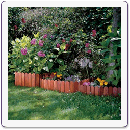
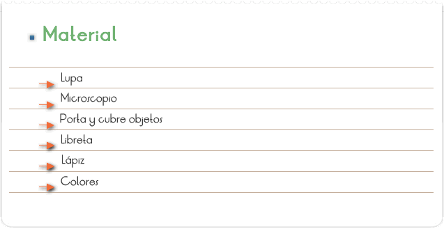
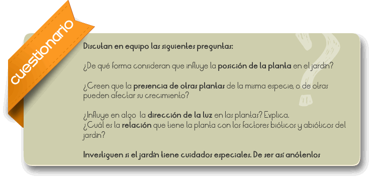

Del francés jardín, huerto. En castellano se llamaba huerto de flor, para distinguirlo del huerto donde se cultivan hortalizas. La adopción de la palabra francesa hizo más fácil la distinción entre uno y otros vocablos. Zona de terreno donde se cultivan especies vegetales para el placer de los sentidos.

Investigar y analizar el tipo de plantas que habitan en un jardín.

1. Siguiendo las indicaciones del profesor se dividirá al grupo en equipos de cuatro o cinco personas.
2. Seleccionar un jardín cercano y analizar las características de las hojas y otros órganos de las plantas que ahí habiten. Por ejemplo las formas de las hojas, el tamaño, color, el aspecto general de la planta, su inclinación hacia la fuente de luz, la presencia de flores y frutos, etc.
3. Cada equipo escogerá una especie vegetal. Comparen dos o tres ejemplares de la misma especie y registren sus observaciones.
4. Elaboren un cuadro de registro de datos.
5. Dibujar cada ejemplar observado con la lupa.
6. Hacer una preparación de la epidermis de una o dos hojas y observarlas con el objetivo de 10x, dibujarlas, anotar las diferencias que hay entre ellas.

En la actualidad se utilizan muchos métodos para obtener los conocimientos de los seres vivos, con esta actividad aprenderemos a resolver problemas, y una de ellas es la observación de ejemplares. Un jardín hoy en día tiene una gran variedad de especies vegetales que de alguna manera se ven influenciados por la mano del hombre, y modificados por las sustancias con que son tratados lo que se ve reflejados en su abundancia y diversidad de especies del mismo.